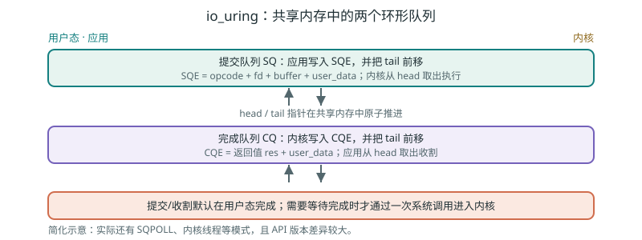

一次文件读取为什么可能阻塞线程，而另一次却通过事件通知完成？理解 I/O 模型，首先要区分两个问题：数据何时准备好，以及数据何时真正从内核交付给应用。select、poll、epoll 主要提供就绪通知；io_uring 则通过提交队列与完成队列提供异步操作接口，但具体操作是否真正异步，仍取决于操作类型、文件系统、驱动和内核版本。
本章从阻塞与非阻塞 I/O 的控制流出发，解释多路复用、epoll 的 LT/ET 语义，再拆解 io_uring 的 SQ/CQ、固定缓冲区和注册文件。最后比较 sendfile、splice、mmap 等数据路径优化。零拷贝不是“完全没有复制”，而是减少特定路径中的数据拷贝或用户态参与；性能收益必须结合系统调用次数、缓存行为、内存带宽和负载测量。
一、五种I/O模型全景图
在讨论具体技术之前，我们先建立一个统一的框架。一次典型的I/O操作分为两个阶段：第一阶段是准备数据（等待数据到达网卡或磁盘读出数据），第二阶段是拷贝数据（将数据从内核缓冲区拷贝到用户缓冲区）。不同I/O模型在这两个阶段的行为不同，这是理解一切I/O技术的起点。
| I/O模型 | 第一阶段（等待数据） | 第二阶段（拷贝数据） | 特点 | 典型API |
|---|---|---|---|---|
| 阻塞I/O | 阻塞 | 阻塞 | 简单直观，并发靠多线程 | read / write |
| 非阻塞I/O | 轮询返回 | 阻塞 | 用户态轮询，浪费CPU | read with O_NONBLOCK |
| I/O多路复用 | 阻塞在select/epoll上 | 阻塞（由应用调用read） | 单线程管理海量连接 | epoll_wait / select |
| 信号驱动I/O | 信号通知，不阻塞 | 阻塞（在信号处理中调用read） | 需信号处理上下文 | fcntl F_SETOWN + sigaction |
| 异步I/O（POSIX AIO / io_uring） | 不阻塞 | 不阻塞（内核完成后通知） | 异步提交/完成接口；具体操作可能仍阻塞或使用 worker | io_uring_enter / aio_read |
关键认知：很多开发者以为epoll就是"异步I/O"，这是不对的。epoll只是在第一阶段帮你等数据，第二阶段仍然要应用主动调用read()去拷贝数据——这一步依然是阻塞的。io_uring 提供提交/完成队列式异步接口，但这不意味着所有操作都异步完成，也不意味着数据拷贝自动消失。应用仍需检查完成结果、处理短读写与错误；具体请求是否可异步执行取决于文件类型、操作、驱动和内核实现。
阻塞I/O：最朴素但最浪费
这是最原始的I/O模型。当你调用 read(fd, buf, len)，如果数据还没准备好，进程就进入睡眠状态——CPU被白白浪费在等待上。早期服务器每个连接一个线程，当数千个连接同时阻塞时，线程切换的开销高得离谱。这就是C10K问题的根源之一。
非阻塞I/O：让出CPU但代价更高
设置 O_NONBLOCK 后，如果当前无法完成操作，系统调用通常以 EAGAIN/EWOULDBLOCK 返回。应用可以结合 epoll 等就绪通知等待，而不必忙等；纯轮询只是其中一种可能的实现方式。
I/O多路复用：单线程管理千军万马
select/poll/epoll 让一个线程同时等待多个文件描述符。内核帮你筛选出哪些fd准备好了数据，你只需要处理"就绪"的fd即可。这极大地降低了线程开销，是过去15年高性能服务器的基石。
信号驱动I/O：鲜为人知的历史尝试
通过 SIGIO 信号在数据到达时通知进程。听起来完美，但信号上下文中能做的工作极有限，且信号可能丢失。除了一些高版本的UDP服务外，TCP场景下几乎没人使用。
异步I/O：终局方案
应用可先把请求提交到 SQ，再通过 CQ 获取完成事件；提交操作是否立即返回、请求是否需要 worker、以及等待 CQ 时是否阻塞，都由具体操作和提交方式决定。io_uring 是 Linux 提供的通用异步 I/O 接口之一，但不是每类文件与设备操作都保证真正异步。
二、epoll与C10K问题
在io_uring出现之前，epoll是Linux上最成功的I/O事件通知机制。它解决了select/poll的根本性缺陷，让C10K（同时处理1万个连接）成为标配，甚至推动C10M（1000万连接）的探索。
select/poll为什么不行？
select的最大问题是传入的 fd_set 是位图，只能管理1024个fd（FD_SETSIZE 限制）。poll虽然通过数组突破了1024的限制，但两者都存在一个O(n)的性能问题：每次调用都要把所有fd从用户空间拷贝到内核空间，内核遍历所有fd检查就绪状态，然后返回时再拷贝回用户空间。当fd数量到达数万级别时，每次调用都是数MB的数据拷贝和O(n)的遍历——这在SSD和万兆网卡时代是不可接受的。
epoll的event-driven设计
epoll通过三个关键设计解决了O(n)问题：
1. 红黑树管理关注fd：epoll_ctl() 在内核空间维护一棵红黑树，增删改fd的时间复杂度为O(log n)。不再需要每次传递所有fd。
2. 就绪队列（ready list）：当fd上的I/O事件发生时，设备驱动通过回调函数将fd加入到就绪队列。epoll_wait 只需从就绪队列中取出已经活跃的fd——返回的就绪fd数量远小于监听的fd总数，复杂度接近O(1)。
3. mmap减少拷贝：epoll通过 mmap 共享内核和用户空间的就绪事件数组，减少了数据拷贝开销。
// epoll的经典用法——事件驱动服务器骨架
int epfd = epoll_create1(0);
struct epoll_event ev, events[1024];
ev.events = EPOLLIN | EPOLLET; // 边缘触发
ev.data.fd = listen_fd;
epoll_ctl(epfd, EPOLL_CTL_ADD, listen_fd, &ev);
while (1) {
int nready = epoll_wait(epfd, events, 1024, -1);
for (int i = 0; i < nready; i++) {
if (events[i].data.fd == listen_fd) {
// 处理新连接（accept）
} else {
// 处理已就绪的fd（非阻塞read/write）
}
}
}踩坑实录：边缘触发（ET）模式配合非阻塞I/O，需要在read()时循环读取直到返回EAGAIN。很多初学者把ET当作性能神器，但注意——如果你在ET模式下没有读完数据就返回epoll_wait，该fd的剩余数据永远不会再触发事件（因为边缘触发只在状态变化时通知一次）。这就是著名的"ET饿死"问题。
水平触发 vs 边缘触发
水平触发（LT）是默认模式：只要fd还有数据没读完，每次epoll_wait都会通知你。简单、不容易出错，但可能多次通知同一个fd。边缘触发（ET）是状态变化触发：只有fd从"无数据"变为"有数据"时才通知一次，你必须一次读完所有数据。ET效率更高，但编程难度大幅增加。Netty、Redis等高性能项目都使用ET模式，因为它们对I/O的精细控制有足够自信。
三、io_uring：新时代的异步I/O
2019年，Jens Axboe（Linux块层核心维护者）将io_uring合并入Linux 5.1内核。这不仅是Linux I/O栈的一次革命，更是操作系统I/O模型的一次范式跃迁。io_uring从根本上解决了传统I/O的两大痛点：系统调用开销和数据拷贝开销。
共享内存环形队列（SQ/CQ）
io_uring的核心创新是使用两个内存环形队列——提交队列（Submission Queue, SQ）和完成队列（Completion Queue, CQ）——在应用和内核之间共享。应用在SQ中填入I/O请求（open/read/write/send/recv/accept 等等），内核从SQ消费请求、执行、然后将结果写入CQ。整个过程不需要系统调用——不！需！要！

// io_uring的基础用法——提交读请求并等待完成
struct io_uring ring;
io_uring_queue_init(1024, &ring, 0);
struct io_uring_sqe *sqe = io_uring_get_sqe(&ring);
io_uring_prep_read(sqe, fd, buf, buf_size, offset);
io_uring_submit(&ring); // 可能需要一次syscall来通知内核
// 做一些其他工作...
struct io_uring_cqe *cqe;
io_uring_wait_cqe(&ring, &cqe); // 等待I/O完成
if (cqe->res < 0) {
// 处理错误
} else {
// 数据已拷贝到buf，直接使用
}
io_uring_cqe_seen(&ring, &cqe);零系统调用理想路径：在io_uring的SQ/CQ管理中，如果SQ中有空闲槽位，应用通过 mmap 映射直接写入共享内存，完全不需要系统调用。只有需要"通知内核来取任务"时，才需要 io_uring_enter() 系统调用。更进一步，通过 IORING_SETUP_SQPOLL 让内核线程轮询SQ，甚至连这最后一次系统调用都省掉了——真正的零系统调用路径。
Fixed Files / Buffers 优化
传统 read(fd, buf, ...) 每次都要做文件描述符查找和用户空间页面的映射，这些是系统调用中的常见开销。io_uring通过两种"固定"机制大幅降低这个开销：
Fixed Files：通过 IORING_REGISTER_FILES 预先将fd注册到内核，后续I/O操作使用fd索引而非fd本身，避免了每次查找文件描述符表。
Fixed Buffers：通过 IORING_REGISTER_BUFFERS 预先注册用户缓冲区并锁定物理内存页（mlock），消除后续I/O操作中逐页映射的开销。这对大块数据传输（如存储服务器的读写）效果极为显著。
| 特性 | 传统read/write | io_uring普通模式 | io_uring + Fixed |
|---|---|---|---|
| 系统调用次数 | 每次I/O 1次syscall | 批量提交，均摊syscall | SQPOLL下0次syscall |
| fd查找 | 每次从进程fd表查找 | 每次查找 | 索引查找，O(1) |
| 页映射 | 每次建立临时映射 | 每次建立临时映射 | 预先锁定，复用映射 |
| 内存拷贝 | 必须经过内核缓冲 | 取决于操作类型 | 支持零拷贝 |
| 批量提交 | 不支持 | 支持batch提交 | 支持batch提交 |
| 适用场景 | 通用场景 | 高并发网络/存储 | 极致性能场景 |
机制追踪：io_uring_submit() 之后，请求是怎么被内核发现并完成的？
io_uring 与同步 read() 最大的控制流差异，在于“提交”和“完成”是两件分开的事。按顺序看：
- 填入 SQE：应用获取一个空闲 SQ 槽位，写入 opcode、fd、缓冲区、偏移和
user_data，并把 SQ 的 tail 前移。 - 决定是否进入内核：若内核可能在轮询（
IORING_SETUP_SQPOLL），提交可不发系统调用；否则用io_uring_enter（带to_submit）告知内核“SQ 里有新请求”。 - 内核消费并异步执行：内核从 SQ head 取出 SQE，交给对应文件/网络实现异步处理；期间应用可以继续提交或做别的工作，不必原地阻塞。
- 写 CQE：操作完成后，内核把结果（
res与提交时原样带回的user_data）写入 CQ 并推进 CQ tail。 - 应用收割：应用从 CQ head 读出 CQE，用
user_data匹配回自己的请求，再推进 head（cqe_seen）。
为什么完成要靠 user_data 匹配，而不是按提交顺序？
因为完成顺序不保证与提交顺序一致：不同操作的耗时不同，内核可能乱序完成。这与同步 read() 有本质区别——同步调用返回时就已经拿着本次结果；io_uring 必须把“发起”和“结果”用 user_data 关联起来。这也是 epoll 的“就绪通知”与 io_uring 的“完成通知”区别所在：前者告诉你“现在读可能不阻塞”，你仍需自己发 read；后者直接交付执行结果。
四、io_uring高级特性演进
io_uring从Linux 5.1开始，几乎每个内核版本都有新特性加入。让我们看看截至Linux 6.19时代的一些重要演进：
IORING_SETUP_SQE_MIXED
IORING_SETUP_SQE_MIXED 允许同一个 ring 混用 64-byte 与 128-byte SQE：普通请求使用较小条目，需要扩展字段的请求（例如部分 IORING_OP_URING_CMD）使用大条目。它不是撤回或修改已提交请求的机制；取消请求应使用对应的 cancel 操作。该标志有内核版本和组合条件限制。
零拷贝接收（zcrx）
io_uring ZC Rx 的目标是减少网络接收路径中的 kernel-to-user payload copy：在满足硬件与驱动条件时，网卡可将 payload DMA 到用户态预注册区域；包头仍由内核接收并由内核 TCP 栈处理。该功能要求 NIC 支持 header/data split、专用 RX queue、flow steering 和 RSS，且需用户配置网卡队列；它不是通用网卡能力，也不是绕过整个内核协议栈。
io_uring zcrx vs DPDK：DPDK 通常通过用户态轮询与 PMD 数据路径绕开常规内核网络栈；应用可选择 DPDK 提供的用户态协议栈或其他协议栈方案。io_uring ZC Rx 则保留内核协议栈对包头/TCP 的处理，仅在满足 NIC 和队列条件时把 payload 放入用户态缓冲区。两者的资源模型、部署条件和可编程边界不同，不能简单称为等价替代。
BPF控制io_uring
较新的内核开发中出现了用 BPF 对 io_uring 操作进行更细粒度限制/过滤的接口与补丁系列；这类功能的目标是按操作码或请求属性实施策略，并不等于可以任意改写 I/O 数据或在通用 I/O 路径中实现压缩/加密。是否可用需核对目标内核版本的 UAPI、配置和发行版回移情况。
dmabuf读写（Linux 6.12-6.19）
dmabuf（DMA Buffer）是Linux内核中用于在设备之间共享DMA缓冲区的机制。DMA-BUF-backed registered buffers 与 io_uring read/write 的集成是面向兼容文件/设备的 opt-in 能力，具体支持范围取决于目标内核、驱动和文件操作实现。它不能直接推导为 GPU、NIC、NVMe 之间普遍可实现 peer-to-peer 直连，也不等同于 GPUDirect Storage 或 GPUDirect RDMA；是否发生 CPU 拷贝必须按实际 DMA/IOMMU 路径验证。
五、零拷贝技术矩阵
说了一整章的"零拷贝"，但零拷贝实际上是一个大家族，每种技术解决的层面不同。我们来一个系统比较：
| 技术 | 内核版本 | 实现方式 | 应用场景 | 消除的拷贝 |
|---|---|---|---|---|
| sendfile | Linux 2.2+ | 文件→socket直接DMA | 静态文件服务 | 文件→用户空间→socket |
| splice | Linux 2.6.17+ | 两个fd之间的管道传输 | 代理服务器中的数据中转 | 中间缓冲区的用户态拷贝 |
| MSG_ZEROCOPY | Linux 4.14+ | send()带MSG_ZEROCOPY标志 | 大包发送场景 | 用户空间→内核空间拷贝 |
| io_uring zcrx | Linux 6.x+ | 注册用户缓冲区，NIC DMA直达 | 高性能网络接收 | 内核态→用户态拷贝 |
| TCP devmem DMABUF | Linux 6.12+ | dmabuf在NIC和GPU间共享 | AI训练GPU Direct Storage | NIC→内存→GPU全部消除 |
这些技术不是互斥的，而是可以在不同层面组合使用。比如一个高性能存储服务器可以用 io_uring + Fixed Buffers来处理读写，用 sendfile 来响应客户端的文件请求，并在网络发送侧启用 MSG_ZEROCOPY 进一步减少拷贝。
工程启示：零拷贝不是银弹。每种零拷贝技术都有适用边界——sendfile不能用于需要修改数据的场景，MSG_ZEROCOPY在发送小包时性能反而更差（因为需要额外的完成通知机制），io_uring zcrx需要应用层配合做buffer生命周期管理。选择零拷贝技术的判断依据是：数据流中是否有不必要的内存副本？如果有，能否在不引入更大开销的前提下消除它？
六、结语与下一章预告
本章我们走过了操作系统I/O模型的完整演进路径——从阻塞I/O到非阻塞，从epoll的事件驱动到io_uring的革命性创新。你看到了工程师们如何一步步解决C10K问题，如何通过共享内存环形队列消除系统调用，又如何通过零拷贝技术消除数据移动的开销。I/O模型不仅仅是OS特性，它深刻影响着你写的每一行网络代码、每一个数据库查询、每一次文件读写。
值得一提的是，io_uring的演进远未结束——它正在从纯粹的I/O框架演变为通用的异步系统调用接口。未来我们甚至可能用 io_uring 来执行 openat、mkdir 甚至 clone 系统调用。可以说io_uring正在模糊"I/O"和"系统调用"的边界。
只读观察：就绪通知（epoll）与完成通知（io_uring）的区别
环境：Linux 主机，普通用户权限；只读取内核开关并用 strace 追踪自己启动的子进程。io_uring 开关与 syscall 支持随内核版本变化。
uname -r; cat /proc/sys/kernel/io_uring_disabled 2>/dev/null || echo '该内核无此开关'
strace -f -e trace=epoll_create1,epoll_ctl,epoll_wait,read python3 - <<'PY'
import select, os
r, w = os.pipe()
ep = select.epoll()
ep.register(r, select.EPOLLIN)
os.write(w, b'x')
print(ep.poll(1)) # 就绪通知：报告可读
print(os.read(r, 1)) # 应用仍需自己发 read
PY预期：追踪里出现 epoll_create1、epoll_ctl 与 epoll_wait，随后才有单独的 read；epoll_wait 只报告 fd 可读，不返回数据。若 io_uring_disabled 为 2，说明本机已禁止创建 io_uring 实例。
解释：epoll 是“就绪通知”——告诉你现在读取不会阻塞，数据还要你自己 read；io_uring 是“完成通知”——内核执行完把结果放进 CQ。这正是两种模型在控制流上的分界，也解释了为何高并发服务会从 epoll 转向 io_uring。清理：均为只读追踪与开关读取。
下一章，我们将从I/O系统的"使用者"视角切换到"实现者"视角，深入理解设备驱动的工作原理。应用程序的I/O请求如何穿越层层内核代码，最终到达硬件设备？设备驱动又是如何通过中断和DMA与硬件交互的？下一章见分晓。